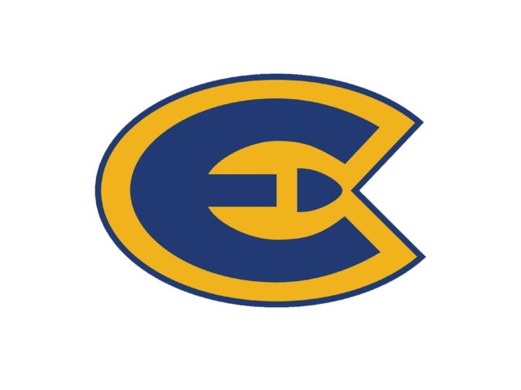

.jpeg)
Max Schupp
Email: maxwellschupp@gmail.com | Phone: 920-460-1710 | GitHub: MaxSchupp | LinkedIn: Max Schupp
Education
I am currently studying at UW-Eau Claire as a third year student. My major is Computer Science. I am planning to graduate in Spring 2024.
For my third year, I am enrolled in Fundamentals of Web Page Design and Web Systems. Previously, I have taken classes such as Database Systems, Computer Architecture, Operating Systems, and Programming Languages.
My Goals
Having Computer Science be my major, I have a passion for many different development fields. I am always seeking the challenge of solving complex problems, even if they fly right over my head. The fields that I am most interested in would be Game Development, Website Development, and Cyber Security. As far as my goals in life go, I want to be in an environment where I am comfortable yet constantly learning new techniques. A place with an infinite amount of design space and creativity, that can hopefully inspire me and challenge me throughout my life.
Technical Skills
Coding Languages
- HTML/CSS
- JavaScript
- Python
- SQL
Proficient in Excel
Know multiple programming software such as Visual Studio, MySQL, and Notepad++
I am currently trying to learn PHP as well as C#
Work Experience
Inventory Management at School Specialty
(June 2022 - August 2022)
- Independently managed large inventory database at warehouse
- Entered daily data and corrected errors that would occur in the database
Banquet Server at Incredible Edibles
(August 2018 - May 2020)
- Used teamwork to ensure that events would go accordingly
- Adapted to unexpected situations in a quick manner
- Developed communication and customer service skills by interacting with clients